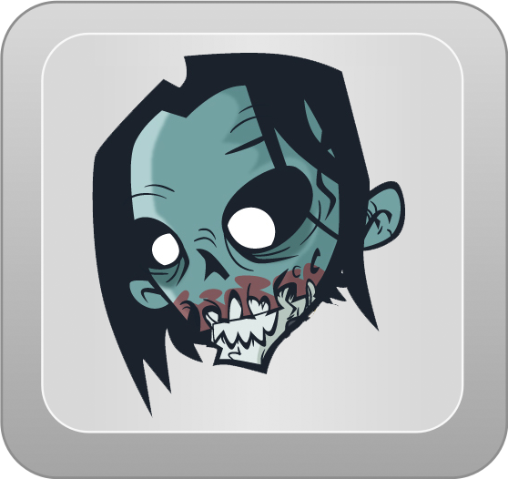
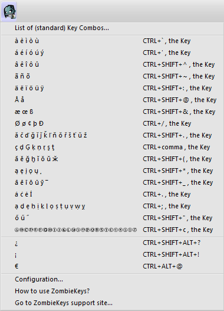
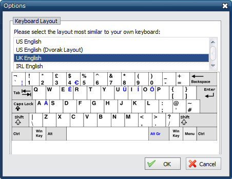

Expand AllCollapse All
- ZombieKeys Icon
-

- Zombiekey Toolbar Menu
-
- Position the cursor where you want the Diacritic to apear.
- .. click on an entry from the Zombiekeys menu
- .. continue typing the letter into the current Edit Box.

- Configuration Screen
-
- Simply select a layout

- .. then press Ok